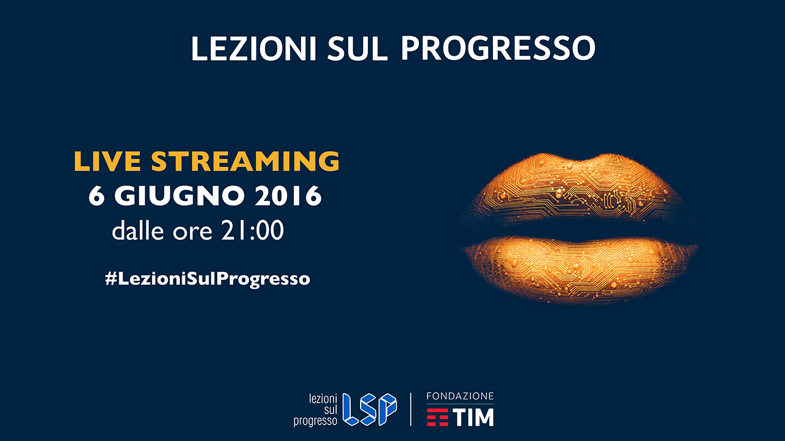

Projects

Inspire the development of new skills and create new opportunities, this is the task that TIM Foundation has set itself.
And for that you can only start from the spread of the culture of innovation and progress.
We thought of a highly innovative approach, expertise and experience of fun able to speak at all: high-level meetings on the topics of scientific and technological culture, to bring the general public to better understand the mechanisms of innovation.
We thought of a highly innovative approach, expertise and experience of fun able to speak at all: high-level meetings on the topics of scientific and technological culture, to bring the general public to better understand the mechanisms of innovation.
In 2009, TIM Foundation launched its first project on dyslexia, thanks to the Dyslexia Program, developed in partnership with AID,
involving 2009-2014 700,000 students, 20,000 teachers and 10,000 schools. In 2016, the Foundation renews and strengthens its commitment on the issue with
the new project "Dyslexia 2.0. Digital Solution "which offers for the first
time in Italy an integrated digital approach to this disorder. The project, undertaken with the support of the Ministry of Education and Ministry of
Health, offers an integrated systems approach that involves more subjects in a network structure.